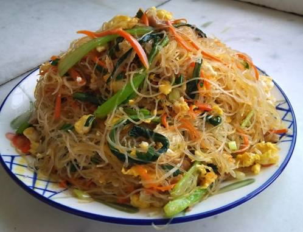
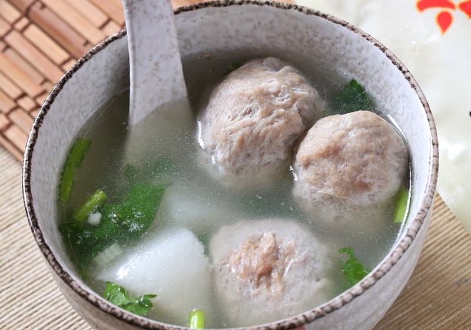
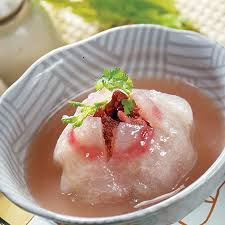
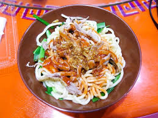

新竹美食介紹(N13170031陳均廷)
新竹炒米粉

新竹炒米粉是新竹最具代表性的傳統美食，因為新竹風大，十分適合風乾米粉，造就了其特有的Q彈口感。搭配香菇、蝦米與肉絲大火快炒，香氣四溢。
新竹貢丸湯

新竹貢丸以純豬肉製作，經過手工捶打讓貢丸吃起來非常有彈性，咬下去飽滿多汁。搭配清甜的大骨高湯與少許芹菜末，簡單卻令人回味無窮。
新竹肉圓

新竹肉圓的特色在於外皮多以番薯粉製作，口感Q彈微透明，內餡通常包含紅糟肉與蔥花。採用油炸的方式料理，起鍋後淋上特製甜辣醬，風味絕佳。
廟口鴨肉麵

新竹的鴨肉麵店家多半以煙燻鴨肉為招牌，鴨肉帶有獨特的燻香，肉質鮮嫩不柴。濃郁的鴨油高湯搭配黃麵，是許多在地人從小吃到大的經典美味。